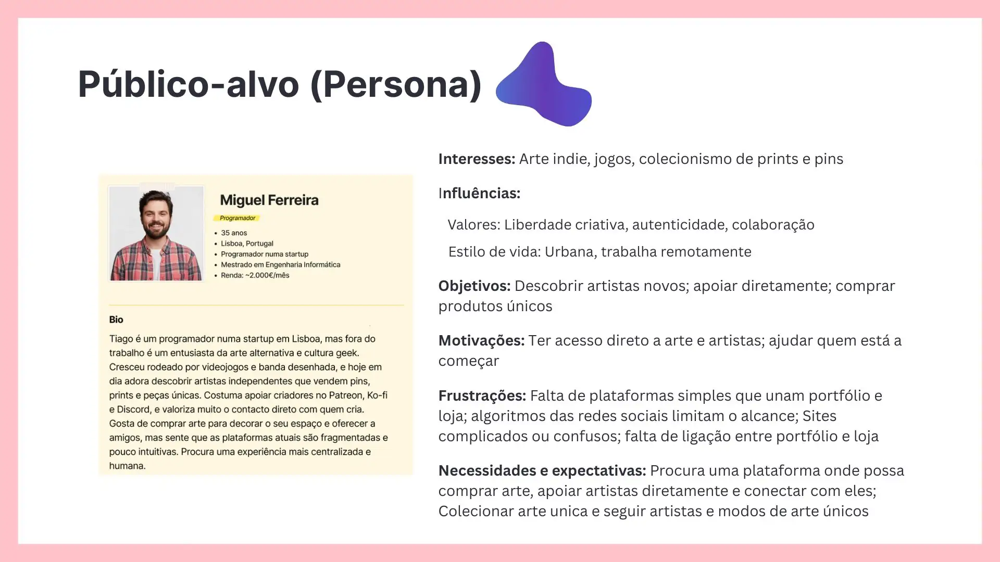
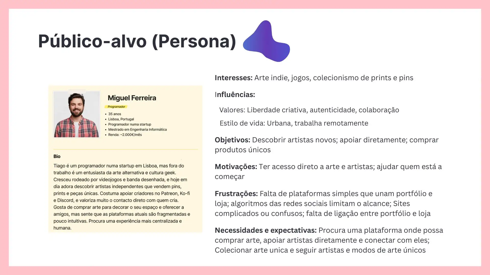
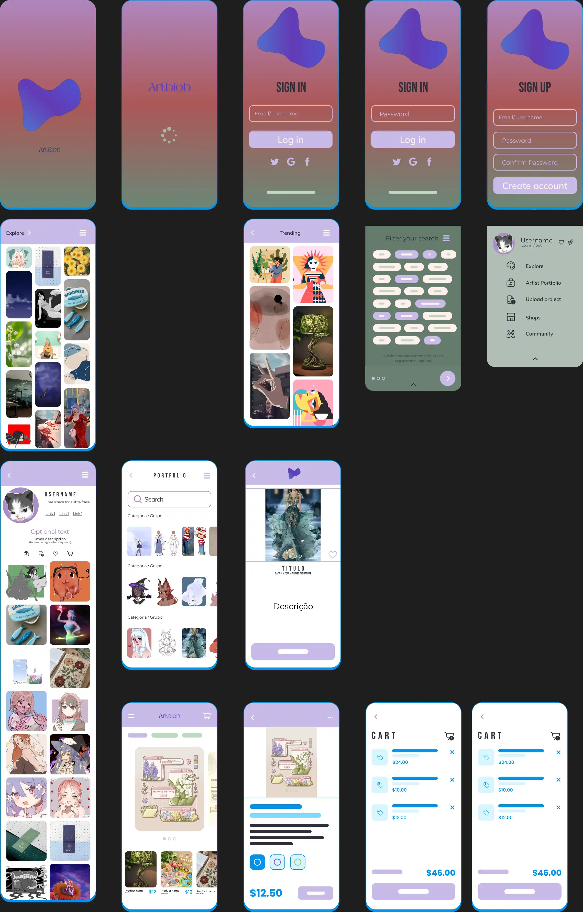
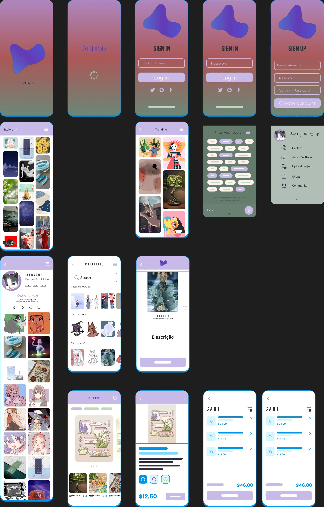

Artblob
ArtBlop is an application created to make life easier for visual artists, bringing together in one place portfolio creation, art sales, and audience interaction. The project arose from the need to offer a more focused and intuitive alternative for those who want to showcase and value their artistic work online, without the concern of AI for both creators and buyers.
The Challenge and the Solution
Challenge: Create a platform for both artists (of all media types) and lovers of the arts and culture.
Solution:Implement various ways to share work with an explore page, forums, and even ways to publish and share in communities with posts/publications (inspired by Reddit and DeviantArt/ArtStation). AI control (sharing AI-generated art is banned), etc.

Caption: Map of the app’s overall structure.
Design Process
Focused on artists’ needs through research, structuring the platform with wireframes, and developing a basic prototype to visualize core features and user flow.
 

 

Caption: Examples of design process stages — personas, low-fi and high-fi.
Results and Learnings
The project allowed me to apply various stages of digital design, from research to prototyping. Throughout the process, I learned the importance of thinking about user experience from the start and balancing creativity with functionality.